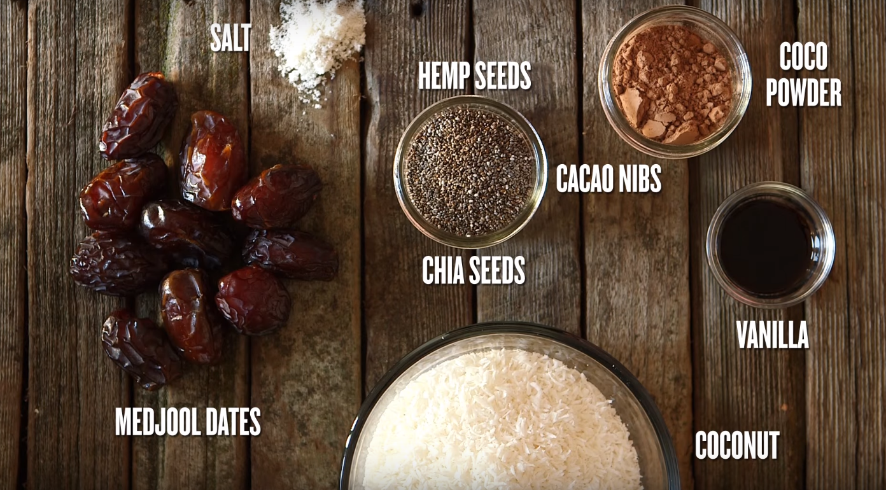
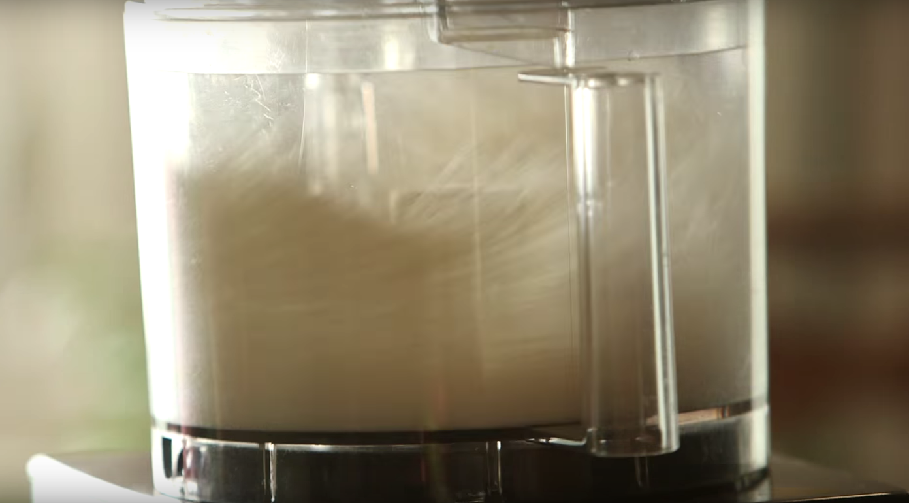
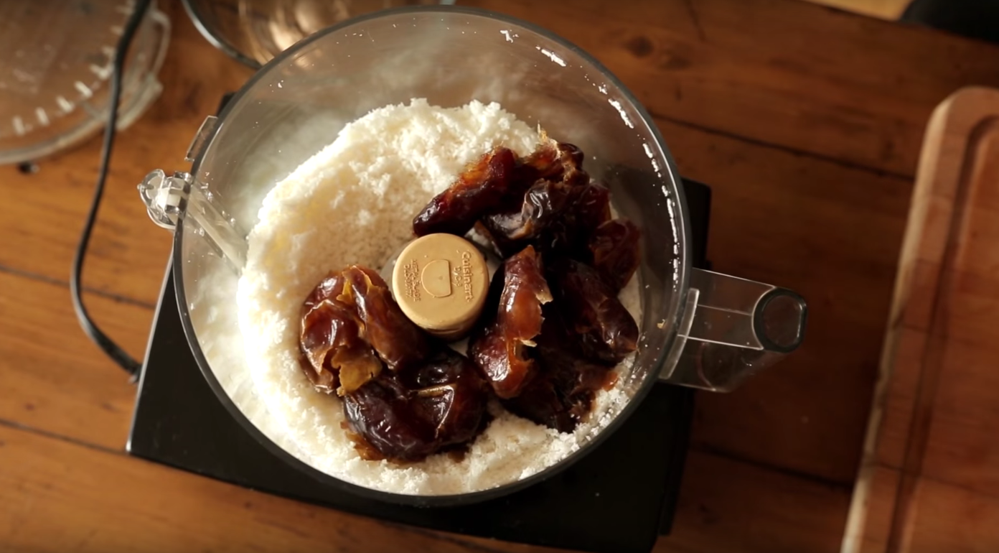
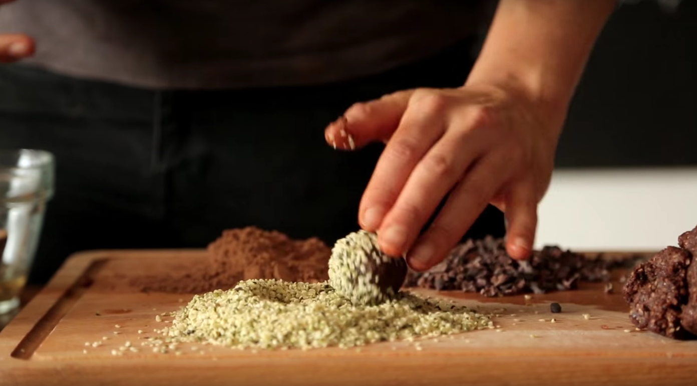
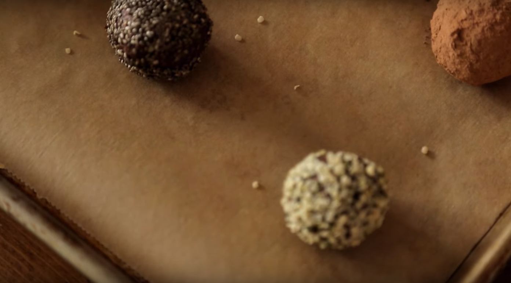

Raw energy bars
10 minutes
Ingredients
- 1/2 cups shredded coconut
- 10 medjool dates, soaked for 15 mins
- 1/4 cup cocoa powder
- 1 teaspoon vanilla extract
- pinch sea salt
Method
-
In a food processor, grind the coconut into a fine meal.
 -
Add in the rest of the ingredients, and process again until a sticky dough is formed.
 -
Scoop the dough by heaping tablespoons and roll each bar into your hands.
-
Coat bars in chia seeds, hemp seeds, cocoa powder, or cacao nibs.
 -
Place them onto a baking sheet lined with parchment paper.
 -
Store the bars in the fridge or freezer